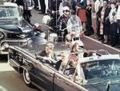

John Fitzgerald Kennedy
35th president of the United States (196163)
Born: May 29, 1917, in Brookline, Massachusetts
Died: November 22, 1963
Political Party: Democratic
John Fitzgerald Kennedy was the first Roman Catholic president. At age 43, he was also the youngest person ever elected to the office. To many Americans, Kennedy and his wife, Jacqueline Bouvier Kennedy, symbolized youth, culture, and a future filled with promise. Kennedy supported civil rights, the exploration of outer space, and the arts. He initiated the Peace Corps, a volunteer program that invited Americans to come to the aid of people in developing countries. In foreign policy, Kennedy confronted major challenges by the Soviet Union in Cuba and in Berlin.
Early Life
John F. Kennedy was the second of nine children of Joseph Patrick Kennedy and Rose Fitzgerald Kennedy. John Kennedy graduated from the Choate School (which later became the Choate Rosemary Hall) in 1935 in the middle of his class. He was voted "most likely to succeed" by his classmates. Kennedy attended the London School of Economics (today known as the London School of Economics and Political Science) in England and graduated with honors from Harvard University. He also studied at the Stanford University Graduate School of Business in Palo Alto, California.
War Record
During World War II, Kennedy joined the U.S. Navy. In 1943, he was commander of a PT (patrol torpedo) boat in the Pacific when a Japanese destroyer sank his boat. Lieutenant Kennedy managed to get the survivors to an island. He swam from island to island, searching for help. Finally, he sent two islanders for aid. He gave them a coconut with a message carved into it. Kennedy received a Purple Heart and the Navy and Marine Corps Medal for his bravery.
Politics, Marriage, and Publishing
After the war, Kennedy returned home to Massachusetts to take up a political career. He was elected to the U.S. Congress in 1946, and reelected in 1948 and 1950. In 1952, he won a seat in the Senate.
The next year, he married Jacqueline Bouvier. They had three children: Caroline; John, Jr.; and Patrick Bouvier. Patrick died two days after his birth in August 1963. John, Jr., was killed when the plane he was piloting crashed off Martha's Vineyard, Massachusetts, in 1999.
In 1957, John F. Kennedy won the Pulitzer Prize for Profiles in Courage, a collection of essays about political leaders.
The 35th President
In 1960, Kennedy became the Democratic candidate for president. Lyndon B. Johnson of Texas was his running mate. Kennedy and his Republican opponent, Vice President Richard Nixon, participated in the first televised presidential debates. TV viewers thought Kennedy won the debates, while radio listeners thought Nixon won. On Election Day, Kennedy narrowly won the popular vote. But he won the electoral vote by a wide margin, 303 for Kennedy, 219 for Nixon.
Foreign Affairs
In his inaugural speech, Kennedy told the nation to "ask not what your country can do for you; ask what you can do for your country."
From the start of his presidency, Kennedy faced many challenges with the Soviet Union. In April 1961, he allowed anti-Communist Cuban exiles to invade Cuba at the Bay of Pigs. They planned to overthrow Cuba's Communist leader, Fidel Castro, but the attempt failed miserably. Although the invasion had been planned before Kennedy took office, he accepted full responsibility for its failure.
Relations with the Soviet Union worsened. In June 1961, Kennedy met with the Soviet leader Nikita Khrushchev. No progress was made, and Khrushchev ordered that a wall be built, separating Communist East Berlin from democratic West Berlin, both of which were situated in Soviet-controlled East Germany. To support the West German people, Kennedy made a visit to city. "Ich bin ein Berliner (I am a Berliner)," he told the cheering West Berliners.
In October 1962, Kennedy faced a very serious challenge from the Soviets. In Cuba, the Soviets had set up missiles pointed at the United States. Kennedy said the missiles must be dismantled. He ordered a blockade of Cuba so Soviet ships with war materials could not reach the island. For 13 days, all the world watched and waited. The greatest fear was the possibility of a nuclear war between two superpowers. Finally, Khrushchev backed down. He said if the United States would promise not to invade Cuba, the Soviets would remove the missiles. The Soviet ships turned back.
In August 1963, the United States and the Soviet Union signed a treaty banning nuclear tests in the Earth's atmosphere.
Domestic Policies
Kennedy had defeated Nixon by only about 100,000 votes. As a result, the president had a hard time getting Congress to approve his programs. Congress did approve the Peace Corps, Kennedy's volunteer program to help people in poor countries, but would not pass tax cuts or Kennedy's civil-rights bill.
In May 1961, Kennedy promised the American people that the United States would land a man on the Moon by 1969. Although Kennedy did not live to see this, his promise was fulfilled.
Tragedy in Dallas
In November 1963, Kennedy went to Dallas to meet with leaders of the Democratic Party. Kennedy and his wife rode in a motorcade through the city. At 12:30 , the president was struck by two bullets. Kennedy was pronounced dead at 1:00 , and Vice President Lyndon Johnson took the oath of office and became president at 2:38 A commission later concluded that the bullets had been fired by a lone gunman, Lee Harvey Oswald.
Millions of people mourned the death of the young president. After Kennedy's death, President Lyndon Johnson was able to push many of Kennedy's programs through the Congress, among them the Civil Rights Act of 1964.
Related articles:
Johnson, Lyndon Baines
Onassis, Jacqueline Kennedy

